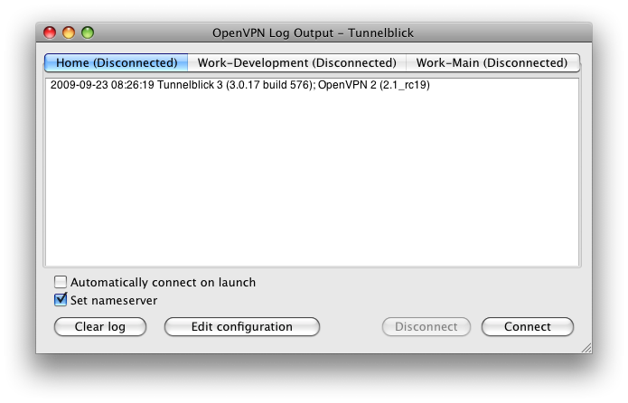

Tunnelblick
is an OS X Graphical User Interface (GUI) for the OpenVPN free and
open-source program, which maintains VPN "tunnels". It provides
easy-to-use control of OpenVPN server and/or client connections. It is
written in Cocoa, runs on OS X Tiger (10.4), Leopard (10.5), and Snow
Leopard (10.6) when booted into 32-bit mode. It comes as a ready to use
Universal 32-bit application with all necessary binaries and drivers,
including OpenVPN and tun/tap. Tunnelblick is free software licensed
under the GNU General Public License (GPL) Version 2.
For more information, including wikis and a discussion group, see the Tunnelblick home page.
This document describes how to use Tunnelblick version 3.0b18 and was last modified 2009-09-23.
This document may be obsolete!
The latest versions of this document and related documents including
release notes, FAQ, and instructions for building Tunnelblick from the
source code may be found in the Tunnelblick Wiki.
This document contains the following sections:
To
install Tunnelblick, first download it from the Downloads page, then
double-click the downloaded .dmg file. An icon for a “Tunnelblick” disk
will appear on the Desktop, and a new window similar to the following
will appear:

Drag
Tunnelblick.app (which may be labeled “Tunnelblick” without the “.app”)
and drop it on the shortcut to the Applications folder. This will copy
the application from the .dmg into the Applications folder. You may
then close the window and eject the “Tunnelblick” disk icon.
There
is no need to install OpenVPN separately - the Tunnelblick application
contains both the Tunnelblick GUI and OpenVPN. See the Tunnelblick
release notes (or click "About…" in Tunnelblick) to determine the
version of OpenVPN included with the version of Tunnelblick that you
are using.
If you wish Tunnelblick to appear in the Dock, navigate to Applications, and drag and drop Tunnelblick to the Dock.
To
uninstall Tunnelblick, move Tunnelblick.app from the Applications
folder to the Trash. Other than the preferences and configuration files
described in "File Locations", there are no other files installed --
OpenVPN, the tun/tap kernel extensions, and up/down scripts are
contained within the Tunnelblick.app package and are loaded only when
needed directly from there. Tunnelblick may store passphrases or
passwords in the Keychain at the user's request.
Each
tunnel to be opened by Tunnelblick needs an OpenVPN configuration file.
Tunnelblick considers any file located in ~/Library/openvpn with an
extension of .conf or .ovpn to be a configuration file, and presents
each such file as a potential “connection”. (The "~" refers to your
home folder.) Often these configuration files will be supplied to you.
Refer to the OpenVPN documentation for details about what the configuration file should contain. (Note that some OpenVPN options are available only on Windows.)
Tunnelblick
monitors the folder that contains the configuration files. If a
configuration file is added, the new configuration is available
immediately without restarting Tunnelblick or disturbing existing
connections. If a configuration is removed from the folder, any
connection using that configuration is immediately disconnected. To
disable this behavior, use "doNotMonitorConfigurationFolder". (See the
"Preferences" section.)
The configuration file may also be
"shadow" copied to the /Library/Tunnelblick/username folder. This is
done transparently for configuration files located on network volumes.
The user should never manipulate this folder or its contents directly;
Tunnelblick will do so automatically. (See
"useShadowConfigurationFiles" in the "Preferences" section.)
If Tunnelblick's “Set nameserver” option is used:
- Any “up” or “down” options in the configuration file will be ignored.
- If
any “user” or “group” options appear in the configuration file, DNS
settings will not be restored when a tunnel is disconnected.
Tunnelblick
preferences are contained in
~/Library/Preferences/com.openvpn.tunnelblick.plist. (The “~” indicates
your home folder.)
OpenVPN configuration files are stored in ~/Library/openvpn. Usually the key and certificate files are stored there, too.
Since these files are all located in the user's Library folder, they must be set up separately for each user.
"Shadow"
copies of configuration files may also be located in
/Library/Tunnelblick/username. (See "useShadowConfigurationFiles" in
the "Preferences" section.)
Within
the Tunnelblick.app application, client up/down scripts are located in
Tunnelblick.app/Contents/Resources (see the “Set nameserver” checkbox
in the “OpenVPN Log Window” section). To access
Tunnelblick.app/Contents in the Finder, control-click Tunnelblick.app
in the Applications folder, then click on “Show Package Contents”.
When
there are no configuration files in ~/Library/openvpn (which is usually
the case the first time Tunnelblick is run by each user) the following
screen will be displayed:

If
you click “Quit”, Tunnelblick will quit without doing anything. If you
click “Continue”, Tunnelblick will create and save an example OpenVPN
configuration file, ~/Library/openvpn/openvpn.conf, and then open it in
TextEdit for you to modify. If you have an OpenVPN configuration file
that you are supposed to use, copy its contents, paste them into this
file (replacing the default contents), save, and exit TextEdit. Your
configuration (named “openvpn.conf”) is all set. Tunnelblick changes
the ownership of OpenVPN configuration files to root, so it is
protected against unnoticed and possibly malicious changes.
If
you have received key files or certificate files together with your
personal configuration file, please make sure to put them in
~/Library/openvpn/ (or another location as specified by your network
administrator). OpenVPN will try to locate the key files in this
folder, unless absolute paths to them are specified in the
configuration file.
The
first time Tunnelblick is run on a particular computer (but only the
first time the first user runs it), it will display the following
screen:

Please
enter the name and password of a computer administrator. Tunnelblick's
imbedded OpenVPN needs root privileges because it needs to modify
network settings by configuring new network devices, changing routes,
and adding and removing nameservers. Because we don't want you to enter
your administrator account name and password every time you start a VPN
connection, Tunnelblick comes with a setuid root binary that allows it
to do exactly one thing: start a VPN connection with super user rights.
Tunnelblick needs your administrator account name password only on its
first start after installation, so it can create this setuid root
binary.
The second time Tunnelblick is run by each user, a screen similar to the following will be displayed:

Specify
whether or not you wish to have Tunnelblick check for updates. Each
time an update is available, you will be given a choice of whether to
install the update or not.
Whenever
a configuration file changes, you will need to enter the name and
password of a computer administrator. This is done as a security
measure: because configuration files can contain references to scripts
that run as root, they are owned by root and an administrator must
grant permission to use them.
Once
Tunnelblick has been started, you control it from the icon in the
Status Bar at the top of your screen. The Tunnelblick icon is usually
placed between the time and the Spotlight icon. When no VPN connection
is active, the icon is dark, indicating a closed tunnel:

If you click on the icon, you'll see a drop down menu similar to the following:

There
will be a “Connect” menu item for each .ovpn or .conf file in
~/Library/openvpn/. Click on one to establish the corresponding
pre-configured VPN connection. To illustrate the connection being
established, three dots will appear in the menu item, and the
Tunnelblick icon will darken and lighten repeatedly. If the connection
is successfully opened, the icon will change to show an open tunnel:

You
may be asked for a passphrase or username/password combination if
key/certificate files are not being used. You can save your passphrase
or password in Apple's Keychain by checking the appropriate checkbox.
The
connection will be active as long as you do not end it or log out.
Putting your computer to sleep or losing contact with the server (by
lack of wlan signal, for example) will make Tunnelblick periodically
try to re-establish the connection.
If
a connection error occurs, or in the unlikely event of an interface
crash, Tunnelblick will terminate the VPN tunnel and record the error
in the Console Log.
Use
“Disconnect” from the drop-down menu to close the VPN connection. Use
“Quit” to close all open connections and quit the program and prevent
Tunnelblick from starting itself at your next login at your computer.
If
Tunnelblick is running when you logout (or your computer crashes, or is
shut down or restarted), then Tunnelblick will be started automatically
upon login. To stop Tunnelblick from being started automatically upon
login, be sure to quit Tunnelblick before logging out, either by using
the “Quit” command, or by using Command-Q (Apple-Q) when the “OpenVPN
Log” or “About…” window is active. (Don't confuse this automatic launch
of Tunnelblick upon login with the “Automatically connect on launch”
option, which causes a connection to be established when Tunnelblick is
started.)
Click
on the Tunnelblick icon in the Status Bar at the top of your screen
between the time and the Spotlight icon then click on “Details…” to
obtain details for all connections (open or closed). A window similar
to the following will appear:

There
will be a tab for each connection (i.e., each .ovpn or .conf file),
whether the connection is open or closed. Each tab contains a pane with
the OpenVPN Log for the connection and two checkboxes that provide
options for that connection:
When
a connection is attempted, the script for “Set nameserver” saves the
current DNS settings and removes DNS settings that were set by DHCP
(manual DNS settings are not removed). When a connection is
disconnected (or if it fails to connect), the scripts restore the saved
DNS settings. The scripts do not support the simultaneous use of two or
more nameservers for different domains; custom up/down scripts must be
used for this purpose.
In addition, the “OpenVPN Log” window contains four buttons:
You
may use the standard keyboard shortcuts in the "OpenVPN Log" window:
Command-C, Command-X, and Command-V for copy, cut, and paste; and
Command-A, Command-M, Command-W, and Command-Q to select all the text
in the log that is currently being displayed, minimize the window to
the dock, close the window, and quit the program.
Click
on the Tunnelblick icon in the Status Bar at the top of your screen
between the time and the Spotlight icon, then click on “About
Tunnelblick…” to open a window with information about the versions of
Tunnelblick and OpenVPN that are running and a link to the Tunnelblick
website.
If
you are using DHCP, wish to use DNS servers at the far end of the
tunnel when connected, and the VPN server you are connecting to
"pushes" DNS settings to your client, put a check in the "Set
nameserver" checkbox. (This is the situation for most users.)
If
you are using DHCP, wish to use your original DNS server when
connected, and the VPN server you are connecting to does not "push" DNS
settings to your client, un-check the "Set nameserver" checkbox.
If you are using manual DNS settings and wish to continue using them when connected, un-check the "Set nameserver" checkbox.
Otherwise
(e.g., if you use manual DNS settings and wish to use DNS servers at
the far end of a tunnel when connected, or you wish to use the OS X
ability to use different nameservers for different domains), you must
create your own up/down scripts and un-check the "Set nameserver"
checkbox.
You
can put more than one .ovpn or .conf file together with its key and/or
certificate files into the ~/Library/openvpn folder. Tunnelblick
interprets each .ovpn or .conf file in the ~/Library/openvpn folder as
a configuration file for a different connection; each of the
connections will be available in the drop down menu and shown as a
separate tab in the “OpenVPN Log” window.
Tunnelblick can maintain multiple simultaneous open connections to different VPNs.
However, this is for experts only:
Tunnelblick
was designed as a persistent menu icon that survives reboots. To this
end, it inserts itself into the login items when it is started and only
removes itself from the login items when you choose Quit from the menu
or Command-Q from the “OpenVPN Log” window. So if you just log out,
shut down, or restart your computer, or it crashes, the next time you
log in, Tunnelblick will automatically start. If you do not want
Tunnelblick to start automatically, quit Tunnelblick before you log
out, shut down, or restart.
You
can specify that a connection automatically be opened when Tunnelblick
starts by putting a check in the “Automatically connect on launch”
checkbox for that connection. The checkbox is located on the
connection's tab in the “OpenVPN Log” window.
There is not yet a GUI for Tunnelblick's preferences.
They
are stored in ~/Library/Preferences/com.openvpn.tunnelblick.plist and
can be inspected and modified with the “defaults” terminal command,
which is documented on the defaults man page. Example: to set the “showAllDurations” preference, the command would be:
defaults write com.openvpn.tunnelblick showAllDurations 1
Preferences can also be inspected and edited with the “Property List Editor”, which is a small part of the free Developer Tools
available from Apple (a free Apple Developer Connection membership is
required). The Developer Tools are a very large (over 900MB download)
suite of programs for developing software for Macs and iPhones.
Tunnelblick uses the following preferences for each user:
useShadowConfigurationFiles
If is set, each configuration file will be copied to a "shadow"
configuration file in the /Library/Tunnelblick/username folder. The
copy will be owned by root with permissions 0644 (the same as a normal
configuration file). Shadow copies are automatically used after getting
the user's permission (even without this preference being set) if the
configuration file is located on a network volume. This preference
allows home folders to be configured so as to prohibit ownership of any
file by root.
doNotMonitorConfigurationFolder
If set, Tunnelblick will not monitor changes to ~/Library/openvpn,
which means that you will have to shut down and restart Tunnelblick for
new configuration files to be recognized. This is normally used only
for network volumes. The default is cleared. Note that an updated
configuration file will be loaded whenever a connection is made,
regardless of this preference.
placeIconInStandardPositionInStatusBar
If set, Tunnelblick will place the icon in the standard position in the
Status Bar, to the left of all other icons. If cleared and the system
supports it, an undocumented system method is used to force the icon to
be between the time and the Spotlight icon. The default is cleared.
skipWarningAboutSimultaneousConnections
If set, the user checked the "Do not show this warning again" checkbox
when being warned about multiple simultaneous connections. The default
is cleared.
SUEnableAutomaticChecks If set,
causes Tunnelblick to check for updates periodically. This is set or
cleared depending on the user's response the second time Tunnelblick is
run.
SUSendProfileInfo Set if the user agreed to send anonymous information about the system configuration to Tunnelblick. The default is cleared.
SUHasLaunchedBefore
Set if Tunnelblick has been run for this user. (The "Check for updates
automatically" question is asked only the second time Tunnelblick is
run.)
SULastCheckTime The date and time Tunnelblick last checked for updates.
detailsWindowFrame The size and position of the “OpenVPN Log” window when it was last closed.
detailsWindowFrameVersion The version of Tunnelblick that saved the detailsWindowFrame preference.
For
each configuration file in ~/Library/openvpn, some or all of the
following preferences may appear: (“ZZZ” is the name of the
configuration file.)
ZZZuseDNS Corresponds to the configuration's “Set nameserver” checkbox. The default is set.
ZZZautoConnect Corresponds to the configuration's “Automatically connect on launch” checkbox. The default is cleared.
ZZZauthUsername The username associated with the configuration.
ZZZusernameIsSet True if the username associated with the configuration has been set.
Tunnelblick
also contains openvpnstart, an OS X command line interface to OpenVPN
which provides a scriptable way to create and destroy OpenVPN tunnels.
openvpnstart is located in Tunnelblick.app/Contents/Resources.
openvpnstart start conf-path port [ use-scripts [ skip-script-security [ use-alt-config ] ] ]
Creates an OpenVPN connection.
openvpnstart kill process-id Destroys an OpenVPN process (and closes any open connection it is managing).
openvpnstart killall
Destroys
all OpenVPN processes (if any) and closes any open connections. If more
than one processe is destroyed, a message with the number destroyed is
output.
openvpnstart OpenVPNInfo
Invokes OpenVPN with no arguments, resulting in a the output of OpenVPN version and usage information.